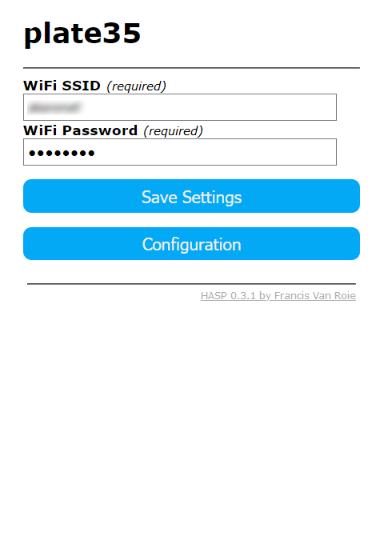

Wifi Settings~
When using a wireless network adapter, you need to configure the SSID to connect.
Web UI~

SSID~
The name of the access point to connect to.
Password~
Optional password for the access point, if required.
Click 'Save Settings' to save your settings to the device. A restart is required to make the settings active. Navigate back to the Main Menu and click Restart to activate the settings.
Commandline~
You can also configure the wifi settings via the serial or telnet console:
ssid myAccessPointName
pass myWifiPassword
reboot